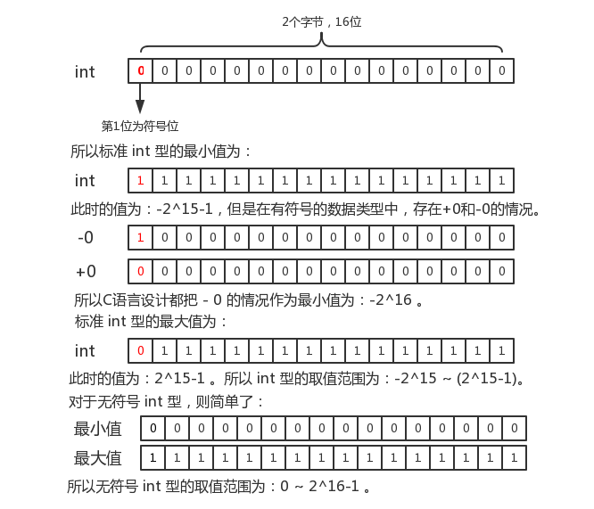

| C语言数据类型 | 基本类型 | 整型 | 短整型（short int） |
| 长整型（long int） | |||
| 字符型（char） | |||
| 实型（浮点型） | 单精度（float） | ||
| 双精度（double） | |||
| 枚举类型（enum） | |||
| 构造类型 | 数组类型 | ||
| 结构体类型（struct） | |||
| 共用体类型（union） | |||
| 指针类型 | |||
| 空类型（void） | |||
C语言中标识符是用来标识变量名、符号常量名、函数名、数组名、类型名等程序对象的有效字符序列。简单的说，标识符就是一个名字。
常量又称常数，是指在程序运行中，其值不能被改变的量。常用的有：整型常量、实型常量、字符常量、字符串常量和符号常量。
整型常量就是整常数，是由一个或多个数字组成，可以有正、负号，但不能有小数点。在C语言中，使用的整常数有八进制、十六进制和十进制三种。此外，整型常量还有整型、长整型和无符号之分。
237、-568、65535、1627。015、0101、01777。0XA1、0XFFFE。在16位字长的机器上，基本整型的长度为16位，因此表示的数的范围是有限定的。如果使用的数超过了范围，就必须用长整型来表示。长整型数是用后缀“L”和“l”来表示的。例如：158L、35800L。长整数158L和基本整常数158在数值上并无区别。但对158L，因为是长整型量，C编译系统为它分配4个字节存储空间。而对158，因为是基本整型，只分配2个字节的存储空间。
无符号数也用后缀表示，整型常数的无符号数的后缀为“U”或“u”。例如：358u、0x38Au、235Lu。
前缀和后缀可以同时使用以表示各种类型的数。
三种进制表示方法的转换：
#include"stdio.h"
void main(){
int x = 1246, y = 01246, z = 0x1246;
printf("%d,%d,%d\n", x, y, z);
printf("%o,%o,%o\n", x, y, z);
printf("%x,%x,%x\n", x, y, z);
}运行输出结果为：
1246,678,4678
2336,1246,11106
4de,2a6,1246在C语言中，把带小数的数值称为实数或浮点数。C语言实型常量只使用十进制数。有以下两种形式：
它是由正负号、整型部分、小数点、小数部分组成，如：3.14159, -7.2, 8.9等都是十进制小数形式。
它是由正负号、整型部分、小数点、小数部分和字母E或e后面带正负号的整数组成。如：十进制数180000.0=1.8×105用指数法可以表示1.8e5，其中：1.8称为尾数，5称为指数。0.00123用指数法表示为1.23E-3。
注意：e 前 e 后都有数，e 后必须为整数。
字符型常量是由一对单引号括起来的单个字符，在内存中占1个字符。例如：'A', 'b', '2', '%', ';'等都是有效的字符型常量。注意：
| 字符形式 | 表示含义 | 字符形式 | 表示含义 |
|---|---|---|---|
| \n | 回车换行 | \\ | 反斜杠字符\ |
| \t | 水平制表符 | \' | 单引号 |
| \v | 垂直制表符 | \" | 双引号 |
| \r | 回车符 | \ddd | 三位八进制数代表一个字符 |
| \f | 换页符 | \xhh | 两位十六进制数代表一个字符 |
| \b | 退格符 | \0 | 空值，其ASCII码值为0 |
用一个特定的符号来代替一个常量或字符串，这个符号称为符号常量。符号常量一般用大写字母表示，以便与其他标识符相区别。符号常量的一般定义形式：
#define 符号常量 常量(或“字符串”)预处理命令#define又称宏定义。一个#define命令只能定义一个符号常量。因为它不是语句，所以结尾不用加分号。
符号常量的使用：
#include"stdio.h"
#define PRICE 30
void main(){
int num, total;
num = 10;
total = num*PRICE;
printf("total=%d", total);
}在上面例子中，PRICE是一个符号常量，它的值是30，因此程序中
total = num*PRICE;
语句在编译时PRICE的值将被30代替。符号常量具有增强程序的通用性和可维护性的优点。如果一个程序中有多处使用同一个常量，这时可把该常量定义为一个符号常量。若需要修改该常量时，则只需要在定义处修改即可。可以做到一改全改，避免出现修改不完全或遗漏等错误。
变量是指在程序运行期间其值可以发生变化的量。一个变量在内存中占据一定的存储单元，在程序中从变量中取值，实际上是通过变量名找到相应的内存地址，从其存储单元中读取数据。在定义变量的同时要说明该变量的类型，系统编译时根据变量及其类型为它分配相应数量的存储空间。
| 变量 | 普通变量 | 整型变量（int） |
| 实型变量（float和double） | ||
| 字符型变量（char） | ||
| 地址变量 | 指针变量 |
变量名的命名规则与标识符定义规则相同。存放变量的内存地址，又为变量的指针。无论使用哪一种类型变量，都要“先定义，后使用”。
整型变量是用来存放整型数据（即不带小数点的数）的变量。
| 类型的说明符 | 数的范围 | 字节数 |
|---|---|---|
| int | -32768~32767，即-215~(215-1) | 2 |
| unsigned int | 0~65535，即0~(216-1) | 2 |
| short int | -32768~32767，即-215~(215-1) | 2 |
| unsigned short | 0~65535，即0~(216-1) | 2 |
| long int | -2147483648~2147483647，即-231~(231-1) | 4 |
| unsigned long | 0~4294967295，即0~(232-1) | 4 |
在不同的编译环境中，数据变量所占字符节数可能不一样，例如：在VC++6.0中int型变量占4个字节，而在Turbo C中int型变量占4个字节。
下面说明一下各种类型是内存当中的表示：
其他类型同理可以得出取值范围。
整型数据的溢出：
#include"stdio.h"
void main(){
short a, b;
a = 32767;
b = a + 1;
printf("%d,%d", a, b);
getchar();
}输出结果为：
32767,-32768自己思考为什么 32767 + 1 会得出 -32768 的结果呢？
实型变量又浮点型变量，在计算机中，实数一律是以指数形式存放的，而不是小数的形式。实型数据一般占4个字节（32位）内存空间，按指数形式存储。例如，实数3.14159在内存中的存放形式如下：
小数部分占的位（bit）数愈多，数的有效数字愈多，精度俞高。指数部分的位数愈多，则能表示的数值范围愈大。
| 类型说明答符 | 位数（字节数） | 有效数字 | 数的范围 |
|---|---|---|---|
| float | 32(4) | 6~7 | 10-37~1038 |
| double | 64(8) | 15~16 | 10-307~10308 |
| long double | 128(16) | 18~19 | 10-4931~104932 |
实型数据的舍入误差：
#include"stdio.h"
void main()
{
float a;
double b;
a = 33333.33333;
b = 33333.33333333333333;
printf("%f\n%f\n",a,b);
}输出结果为：
33333.332031
33333.333333因为 a 是单精度浮点型，有效数字只有七位，而整数已占五位，故小数点后第三位起均为无效数字。而 b 是双精度型，有效位为十六位。可编译环境规定小数后最多保留六位，其余部分四舍五入。
字符变量用来存储字符常量，即单个字符。字符变量的类型说明符是 char 。每个字符变量分配一个字节的内存空间，因此只能存放一个字符。我们可以把字符型变量当作一个字节的整型变量使用。
将一个整数赋值给一个字符变量：
#include"stdio.h"
void main()
{
char a, b;
a = 120;
b = 121;
printf("%c,%c\n",a,b);
printf("%d,%d\n",a,b);
}输出结果为：
x,y
120,121在程序中常常需要对变量赋初值。C语言程序中可有多种方法为变量提供初值。在变量定义的同时给变量赋以初值的方法，称为变量的初始化。
在C语言中，允许不同类型的数据进行运算。变量的数据类型是可以转换的。转换的方法有两种：自动转换和强制转换。自动转换发生在不同数据类型的数据进行运算时，由编译系统自动完成。
在赋值运算中，赋值号两边量的数据类型不同时，赋值右边量的类型转换为左边量的类型。如果右边量的数据类型长度比左边长时，将丢失一部分数据，这样会造成数据误差。
#include"stdio.h"
void main()
{
float pi = 3.14159;
int s, r = 5;
s = r*r*pi;
printf("s=%d\n",s);
}输出结果为：
s=78强制类型转换是通过类型转换运算来实现的。其一般形式为：
（类型说明符） （表达式）其功能是把表达式的运算结果强制转换成类型说明符所表示的类型。
#include"stdio.h"
void main(){
float f = 5.75;
printf("(int)f=%d,f=%f\n",(int)f,f);
}运行结果为：
(int)f=5,f=5.750000